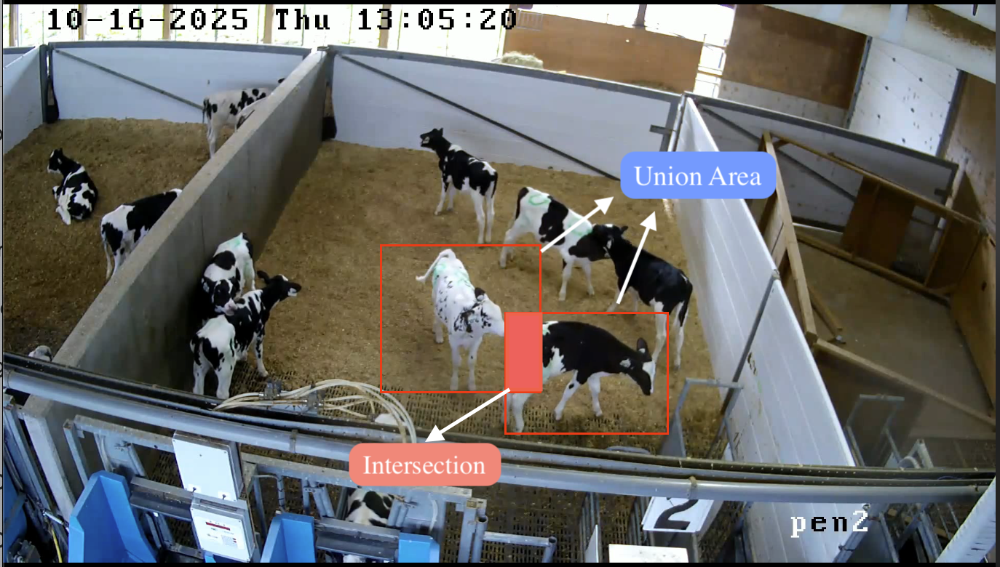
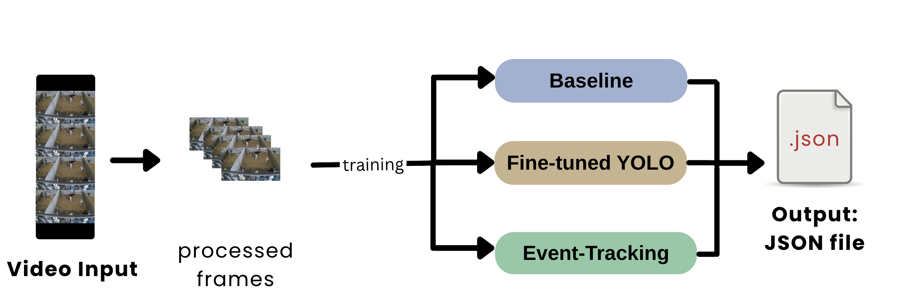

| Split | Model | Events | Conf. Mean | Conf. Std | Dur. Mean (s) | Dur. Std (s) |
|---|---|---|---|---|---|---|
| POSTWEAN | Seq-NMS | 820 | 0.401 | 0.151 | 11.415 | 21.508 |
| POSTWEAN | YOLO | 238 | 0.338 | 0.132 | 49.232 | 90.694 |
| Random | Seq-NMS | 434 | 0.364 | 0.138 | 14.943 | 30.276 |
| Random | YOLO | 162 | 0.342 | 0.119 | 42.810 | 65.208 |
| WEAN | Seq-NMS | 6842 | 0.316 | 0.114 | 6.959 | 14.741 |
| WEAN | YOLO | 554 | 0.301 | 0.091 | 131.273 | 231.199 |
MooVision: Automated Detection of Cross-Sucking Behaviour in Dairy Calves
Executive Summary
Dairy calves are typically separated from their mothers shortly after birth, and efforts to improve welfare through social housing are often limited by farmers’ concerns about cross-sucking; a behaviour in which one calf sucks on the body parts of another, leading to injury, disease transmission, and reduced future milk production. With Canada’s update Code of Practice for Dairy Cattle requiring all indoor-housed calves to be socially housed by 4 weeks of age beginning April 1. 2031 (Weary and Keyserlingk 2025), addressing cross-sucking has become increasingly urgent. Research on cross-sucking is constrained by reliance on manual behavioural annotation, a process that is labour-intensive and difficult to scale. This project develops a computer-vision pipeline that automatically detects cross-sucking events in continuous barn camera footage, producing structured outputs: event timestamps, confidence scores, and bounding box coordinates, that directly reduce the manual annotation burden. Three approaches were evaluated: a pretrained YOLO26 baseline, a fine-tuned YOLO26 detector, and the fine-tuned detector extended with Sequential Non-Maximum Suppression (Seq-NMS). Seq-NMS detected more candidate cross-sucking events than YOLO26 alone in both test periods (Postwean: 820 vs. 238; Wean: 6,842 vs 554), though overall recall remained very low, with data volume identified as the primary bottleneck to further improvement.
Introduction
In modern dairy farms, calves are often separated from their mothers within hours of birth (Mahmoud, Mahmoud, and Ahmed 2016; Wegner et al. 2025) and housed individually (Gaillard 2014). Although individual housing may be easier to manage, social housing has been shown to improve calf welfare, including enhanced social cognition, cognitive development, learning ability, and reduced weaning distress (Plaugher and Cantor 2025). Despite these benefits, many farmers remain reluctant to adopt social housing due to concerns surrounding cross-sucking (Plaugher and Cantor 2025).
Cross-sucking occurs when calves suck on the body parts of another calf, and in this project is defined specifically as sucking directed at the udder area. This behaviour emerges because calves are unable to satisfy their natural suckling instinct following mother–calf separation and therefore redirect this behaviour toward one another (Wegner et al. 2025). Cross-sucking can lead to physical injuries, disease transmission, and long-term reductions in future milk production (Mahmoud, Mahmoud, and Ahmed 2016), reinforcing concerns around social housing systems.
Currently, the UBC Animal Welfare Program (AWP) relies on manual labelling of extensive calf video recordings to study cross-sucking behaviour. This process is time-consuming, labour-intensive, and subject to inconsistencies between annotators, making it difficult to scale to larger datasets in commercial farming environments. This project aims to develop an affordable, automated system capable of detecting cross-sucking from continuous pen video, enabling more efficient, consistent, and scalable analysis of dairy calf behaviour in social housing systems.
Over the course of the project, the original objective was refined into four clear and measurable components:
- Develop a detection model that identifies cross-sucking behaviour in raw video through spatial localization using bounding boxes.
- Implement a temporal linking method that groups frame-level detections into coherent behavioural events with defined start and end times.
- Design an evaluation framework that assesses both the spatial accuracy of bounding box predictions and the temporal accuracy of event detection.
- Build an end-to-end pipeline that processes raw video and outputs structured metadata, including event timestamps, confidence scores, and bounding box coordinates, enabling use by non-technical users in research and farm environments.
The pipeline evaluates model performance at two levels. Frame-level evaluation looks at individual frames and asks whether the model’s predicted bounding boxes line up spatially with the real, annotated cross-sucking regions. Event-level evaluation looks at entire cross-sucking events and asks whether the model detected them at roughly the right time, producing precision, recall, and F1/F2 scores.
Together, these objectives address the partner’s core need: a scalable, automated tool that reduces the manual annotation burden while producing outputs that directly support behavioural research questions about when and how frequently cross-sucking occurs across different housing conditions and developmental stages.
Data
Experimental Data Splits
To evaluate generalisation across deployment scenarios, the dataset was partitioned into eight train/validation splits across four experimental conditions. Table 1 summarises each split type, the number of models trained, and the research question each addresses.
| Split Type | Models | Research Question |
|---|---|---|
| Random | 1 | How well does the model perform when train and test come from the same distribution? |
| Time-based | 1 | How well does the model generalise to unseen days in a known environment? |
| Pen-based | 3 | How well does the model transfer to a new physical environment? |
| Period-based | 3 | How well does the model generalise across calf developmental stage? |
High-Performance Computing (HPC) Workflow & Preprocessing Challenges
Due to the size of our dataset, and the running of multiple experiments, we used UBC ARC Sockeye - UBC’s High-Performance Computing Cluster (HPC) - to gain significant computing power and parallelization for our training pipelines. However, training YOLO26 models requires videos and annotation folders to be unpacked into sets of many individual frames and labels. This posed a unique challenge as HPC systems struggled severely when forced to transfer large numbers of small files. To solve this issue, our pipeline splits into two workflows. This influenced our preprocessing workflows to include two segments: one for handling files on sockeye, and one for handling preprocessing locally. On sockeye, we ran our pipeline in parallel, allowing us to significantly reduce computing time and train models for each of our experiments simultaneously. This reduces the timeframe for running all experiments from multiple weeks to ~2 days. Full operational details are provided in Section 9.2.
Data Science Methods
A. Baseline
The first priority was establishing a functioning baseline pipeline. The baseline uses YOLO26 pre-trained on the COCO dataset to detect calves and draw bounding boxes in each frame. For each frame, we compute the Intersection over Union (IoU) between every detected pair, as illustrated in Figure 1. If any pair exceeds the minimum IoU threshold for at least a minimum duration, it is saved as a cross-sucking event; shorter sequences are discarded as noise.

This approach is deliberately naive, using proximity as a proxy for cross-sucking with no understanding of what the behaviour actually looks like. Its value lies not in accuracy but in providing a reference point against which fine-tuned model improvements can be measured.
B. Fine-tuned YOLO26 Model
To move beyond proximity detection, we fine-tuned the pre-trained YOLO26 model on our labelled cross-sucking data. Rather than detecting any close contact between calves, the model is trained to recognize the specific visual patterns that characterize cross-sucking, the particular postures and spatial configurations that distinguish it from other interactions. This significantly improves detection precision over the baseline.
However, YOLO26 is an object detector, not an action/behaviour recognizer. It processes each frame independently and has no memory of what came before, which creates a distinct challenge: spatial detection without temporal context. YOLO26 learns what cross-sucking looks like in a single frame, but cross-sucking is a behaviour that unfolds over time. A model with no temporal awareness may miss events that are only recognizable across multiple frames or produce inconsistent detections across a sequence (i.e. fragmented event tracking).
C. YOLO26 and Seq-NMS
YOLO26 with Sequential Non-Maximum Suppression (Seq-NMS) extends the fine-tuned YOLO26 approach by adding a temporal linking component. While the fine-tuned YOLO26 model detects cross-sucking behaviour at the frame level, it has no memory of what happened in previous frames. This means a single cross-sucking event is represented as hundreds of disconnected single-frame detections. Seq-NMS addresses this by linking spatially overlapping detections across consecutive frames into coherent event tubes with defined start and end times, and filtering out tubes shorter than a minimum duration to reduce noise. This approach was preferred over more complex tracking algorithms because it is simpler, computationally lightweight, and produces outputs that map directly onto our ground truth annotation format.
A key limitation is that Seq-NMS performance depends heavily on the quality of per-frame detections. With limited training data and few epochs, noisy detections can cause missed events, which is reflected in the low recall that was observed in preliminary results. Another limitation is that Seq-NMS links detections based purely on spatial overlap between consecutive frames. If two calves shift position during a cross-sucking interaction, the bounding box location changes significantly enough that Seq-NMS may break the tube and treat this as two separate events. This could inflate event counts and reduce measured event durations.
D. Preliminary experiment with LLM Gemini
As a parallel experiment, Google Gemini 2.5 Flash was evaluated as a zero-shot multimodal detector to assess whether a large vision-language model could bypass the annotation bottleneck constraining supervised approaches. Two input modalities were tested: direct video input and frame-by-frame image input. Video input was identified as operationally superior, as each API call consumes the same quota unit regardless of clip length, making frame-by-frame processing unviable at barn surveillance scale. The prompt enforced a narrow behavioural definition requiring visible oral-to-hindquarter contact, explicitly excluding ear-sucking, social licking, and proximity without contact (full prompt in Section 9.3).
Data Product

When deployed by a researcher or farm operator, the pipeline takes raw barn camera footage as input and requires no manual annotation or model training. The footage is passed directly through the detection model, which produces per-frame bounding box predictions. These are then aggregated into discrete cross-sucking events with defined start and end times using the temporal linking step. The resulting detections are written to structured JSON metadata files, one per source video, containing event timestamps, confidence scores, and bounding box coordinates. An automated clip extraction tool then uses these outputs to pull and organise flagged video segments by pen, weaning stage, and recording day, giving researchers a condensed set of candidate clips for human review rather than hours of continuous footage.
The current pipeline offers three detection configurations of increasing sophistication, the COCO-pretrained proximity baseline, the fine-tuned YOLO26 detector, and the fine-tuned detector extended with Seq-NMS temporal linking. The research pipeline used to develop and evaluate these models on UBC ARC Sockeye is documented separately in the project repository and is not required for deployment.
This JSON-first, modular architecture was chosen because the research context demands interpretability over automation. Researchers need to verify detections rather than simply trust them, and the structured output gives them enough signal to prioritise which clips warrant immediate review based on confidence and duration. The annotated bounding box overlays further aid this process by making visible exactly what the model was responding to in each flagged segment, supporting a human-in-the-loop review workflow that fits naturally into the AWP’s existing annotation practices.
Results
Prediction Summary
Table 2 summarises predicted event counts, mean confidence, and mean duration across splits and models. Three patterns are consistent across all splits. First, Seq-NMS predicts substantially more events than YOLO in every split: 820 vs 238 in POSTWEAN, 434 vs 162 in Random, and 6,842 vs 554 in WEAN. Second, Seq-NMS events are much shorter on average than YOLO events; in POSTWEAN for example, mean duration is 11.4s for Seq-NMS compared to 49.2s for YOLO. Third, both effects are most pronounced in the WEAN split, where Seq-NMS generates over 12 times more events than YOLO at the shortest mean duration (7.0s), while YOLO produces its longest mean events (131.3s). This is consistent with the Seq-NMS sequence-linking step breaking up what YOLO treats as one long sustained detection into many shorter linked segments, and suggests the WEAN period, where calves are in closer and more frequent proximity, is particularly prone to this behaviour.
Confusion Matrix
Figure 3 reveals the dominant failure mode: across every split and model, the vast majority of confirmed cross-sucking events are predicted as No CS, with true positive counts ranging from 0 to 9 out of 1,100 ground truth events. This confirms that both models are missing nearly all genuine cross-sucking occurrences rather than mislabelling other behaviours as cross-sucking.
Seq-NMS consistently recovered more true positives than YOLO in splits with confirmed signal, 9 vs 3 in POSTWEAN and 5 vs 1 in WEAN, confirming that temporal linking adds genuine recall value, but at a precision cost that is currently too high for unsupervised deployment (POSTWEAN: 193 vs 27 false positives; WEAN: 569 vs 18). Across all split types, neither model demonstrated reliable generalisation, whether to unseen days, new pen environments, or different developmental periods, suggesting that the limiting factor is not the experimental condition but the amount of labelled training data available.
That said, the project successfully delivered a functional end-to-end pipeline capable of processing raw barn video, applying frame-level detection, implementing temporal event linking, and producing structured JSON outputs with timestamps, confidence scores, and bounding box coordinates, directly addressing the AWP’s need for a scalable and interpretable annotation tool.
Temporal Analysis
Figure 4, Figure 5, and Figure 6 show that across all splits, both models fire detections broadly across video timelines with no clear clustering around genuine behavioural bouts. The WEAN split is the most severely affected, with Seq-NMS generating 6,842 events, roughly 8 times the POSTWEAN count, at the lowest mean confidence (0.32) and shortest mean duration (7.0s), consistent with the linking step connecting many short detections during a period when calves are in closer and more frequent physical contact. The random split reinforces this interpretation, with zero confirmed true positives for either model and confidence distributions closely matching those of splits with genuine cross-sucking signal. Taken together, these results suggest the model has learned to detect generic calf proximity rather than cross-sucking behaviour specifically, firing with similar confidence whether or not a genuine event is present and failing to concentrate detections around the moments when cross-sucking actually occurs.
Limitation
Firstly, a different confidence threshold was applied across the baseline and subsequent fine-tuned YOLO26 approaches. Given the fine-tuned model’s observed confidence distribution (mean 0.30–0.40), current thresholds likely suppress valid detections. Ground truth event counts (~1,100 false negatives per split) far exceed detected events, indicating the models miss the vast majority of cross-sucking occurrences rather than mislabelling them. The primary bottleneck is data differentiation; with fewer than 1,100 labelled positive clips and no hard negative examples, the model has insufficient signal to learn a reliable cross-sucking detector. Secondly, as mentioned previously, we use a YOLO26 model to classify behavioural patterns. This approach is limited as YOLO26, an object detection model, holds independent knowledge of singular frames. With a dataset heavily impacted by occlusions and vague cross-sucking interactions, it is possible our results are fundamentally poor and unable to be improved upon within the current modelling framework. Moreover, we did not perform hyperparameter optimization within our model training. It is possible further testing, in this regard, may improve results.
Lastly, due to time constraints, deep analysis into model results was not able to be completed. Additional analysis into model performance may yield further insights into the struggles faced by a YOLO26 modelling framework. For instance, EDA determined several expected problems including occlusions, pattern blendings, camera angles, etc., that may have inhibited cross-sucking detection. A deeper understanding of the causes of our results may provide a clearer picture of the underlying limitations.
Conclusions and Recommendations
A core outcome of this project is the development of a reproducible end-to-end pipeline for cross-sucking detection research, transforming raw barn video into structured event predictions through a standardized workflow for data processing, model training, inference, and evaluation. The pipeline’s capability is demonstrated through multiple split-based experiments using both baseline IoU-based methods and preliminary YOLO-based models. Although current detection performance is not yet sufficient for practical deployment, the underlying infrastructure is robust, reusable, and designed to support future model development. Importantly, the modeling component is modular; researchers can replace the current detection models with more advanced architectures without rebuilding the surrounding data ingestion, preprocessing, evaluation, and reporting pipeline. This positions the project as a practical research foundation for future cross-sucking detection studies and larger-scale behavioural analysis.
Current detection performance is not yet suitable for deployment. Neither model achieved useful recall, with detected events falling well short of ground-truth counts (~1,100 events per split), indicating that missed detections remain the primary challenge. For the AWP’s goal of reducing annotation burden, the next priority should be improving model performance through expanded training data, particularly hard negative examples (e.g. non-cross-sucking footage of calves in close proximity), and hyperparameter tuning (e.g. confidence threshold).
Looking ahead, future work could include training with advanced detection models (e.g. YOWO, Swin Transformer), prediction smoothing for stable annotation across frames, and conducting more comprehensive model evaluation analysis. Once detection performance reaches a practical level, additional engineering investments such as workflow monitoring, fault tolerance, HPC optimization (i.e. Globus file transfer setup), and edge-device deployment (e.g. Raspberry Pi) can be considered.
Appendix
Glossary of Terms
Cross-sucking event: A single, continuous occurrence of cross-sucking behaviour performed by a calf, as identified and labelled by a human annotator. Each event has a defined start and end time within a source video.
Event window: The time interval defined by a start and end time (in seconds) over which a cross-sucking event occurs, applying to both ground truth and predicted events.
Frame: A single still image extracted from a video at a specific point in time.
Frame-level detection: A bounding box predicted by the model on an individual video frame indicating the location of a calf engaged in cross-sucking behaviour.
Bounding box: A rectangular region defined by pixel coordinates that marks the location of a cross-sucking interaction within a single frame.
Frame-level evaluation: Comparison of predicted bounding boxes against ground truth bounding boxes on a frame-by-frame basis, measuring spatial accuracy.
Event-level evaluation: Comparison of entire predicted event windows against ground truth event windows, measuring temporal detection accuracy and producing precision, recall, F1, and F2 scores.
True positive: A predicted event whose time window sufficiently overlaps with a labelled ground truth event.
False positive: A predicted event that does not correspond to any labelled ground truth event.
False negative: A labelled ground truth event that the model failed to detect.
Ground truth: The set of human-annotated cross-sucking events and bounding boxes treated as the correct reference for evaluation.
Preprocessing on Sockeye
On Sockeye preprocessing jobs are split across multiple nodes and run in parallel. For each one, video frames and labels are extracted locally on compute nodes, packaged into datasets, and then transferred to a data storage node (in the scratch directory) as compressed tar files before being transferred back and unpacked on compute nodes as training sets. This avoids the issue of transferring small files and makes use of the high-speed transfer system for large files, ensuring an efficient and timely workflow. Training and evaluation then follow, also split across several nodes to ensure we make use of Sockeye’s cluster system.
In the local workflow, splits must be run in sequential order as functionality for parallelization has not been added. However, data is sent straight to the predesignated root directory, and avoids the need to compress and uncompress a dataset within the same device. Subsequent training and evaluation must be run sequentially as well.
Gemini 2.5 Flash Prompts
Video prompt:
You are an expert in dairy cattle behaviour. Identify cross-sucking in this video. Cross-sucking is defined narrowly: one calf sucking on the hind/rear back, udder, or lower stomach/belly area of another calf. It requires visible oral contact between one calf’s mouth and that hindquarter region. Do NOT count sucking on any other body part (ears, muzzle, legs, etc.), and do NOT count mere proximity, sniffing, head-butting, or social licking. Analyse the video systematically. For every timestamp where cross-sucking occurs, return a 2D bounding box. Respond ONLY with a JSON array:
[{"timestamp_sec": <float>, "label": "cross-sucking", "box_2d": [ymin, xmin, ymax, xmax]}]. If cross-sucking does not occur, return[].
Image prompt:
You are an expert in dairy cattle behaviour. Identify cross-sucking in this image. Cross-sucking is defined narrowly: one calf sucking on the hind/rear back, udder, or lower stomach/belly area of another calf. It requires visible oral contact between one calf’s mouth and that hindquarter region. Do NOT count sucking on any other body part (ears, muzzle, legs, etc.), and do NOT count mere proximity, sniffing, head-butting, or social licking. If cross-sucking clearly occurs, return one tight 2D bounding box enclosing both the sucking calf AND the hindquarter area being sucked, labelled ‘cross-sucking’. Respond ONLY with a JSON array:
[{"label": "cross-sucking", "box_2d": [ymin, xmin, ymax, xmax]}]. If cross-sucking does not clearly occur, return[].
References
Gaillard, Rebecca K. AND von Keyserlingk, Charlotte AND Meagher. 2014. “Social Housing Improves Dairy Calves’ Performance in Two Cognitive Tests.” PLOS ONE 9 (2): 1–6. https://doi.org/10.1371/journal.pone.0090205.
Mahmoud, Motamed Elsayed, Fatma Ali Mahmoud, and Adel Elsayed Ahmed. 2016. “Impacts of Self-and Cross-Sucking on Cattle Health and Performance.” Veterinary World 9 (9): 922.
Plaugher, Gillian D., and Melissa C. Cantor. 2025. “A Scoping Review on Pair Housing Dairy Calves: Health and Performance Outcomes and Tactics to Reduce Cross-Sucking Behavior.” Frontiers in Veterinary Science 12: 1568164. https://doi.org/10.3389/fvets.2025.1568164.
Wegner, Claire S, Cady W Chan, Lars Rönnegård, Sigrid Agenäs, Lena Lidfors, and Hanna K Eriksson. 2025. “Suckling and Allosuckling Behavior of Dairy Calves in Indoor Dam-Rearing Systems.” Frontiers in Veterinary Science 12. https://doi.org/10.3389/fvets.2025.1617158.